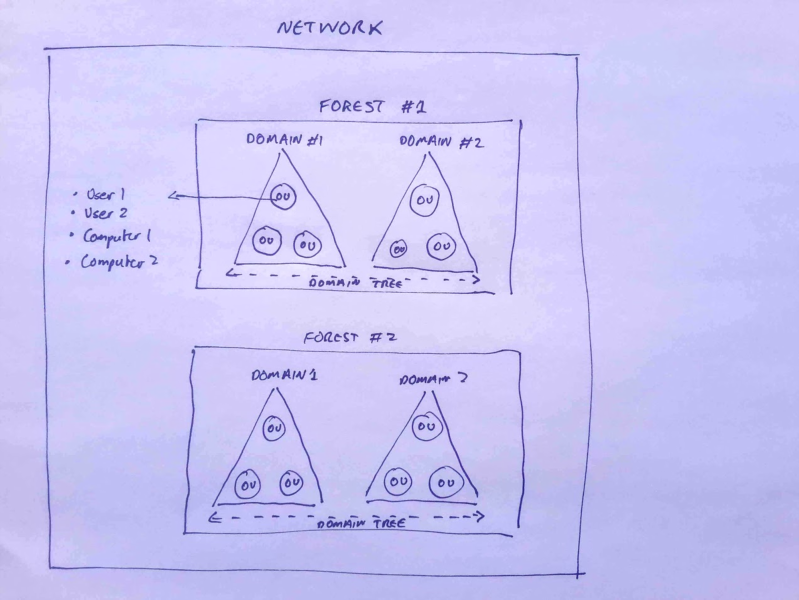

# About Active Directory
Learn Active Directory Management in a Month of Lunches•
http://1.droppdf.com/files/X9btW/manning-learn-active-directory-management-in-a-month-of-lunches-2014.pdfFrom Microsoft
Technet"Active Directory enables centralised, secure management of an entire network"
## What does Active Directory store?
Active Directory stores info about objects on the network.
Things like:
• Windows Clients
• Users (on the network)
• Windows Servers
• Network devices
• Firewalls
• Email servers
• Printers
## Components of Active Directory
• Schema -> defines objects
• Query mechanism -> can search for objects
• Catalog - > info about objects
• Replication service -> distribute info across multiple domain controllers
## Active Directory Structure
• Forests -> Domains -> Organisation Units (OUs)
Forests hold everything -> they're security boundaries.
• Inside forests you have domains.
• Inside domains you have Orangisation Units.
• Inside OUs you have Objects - Users, Computer, Groups, etc.
